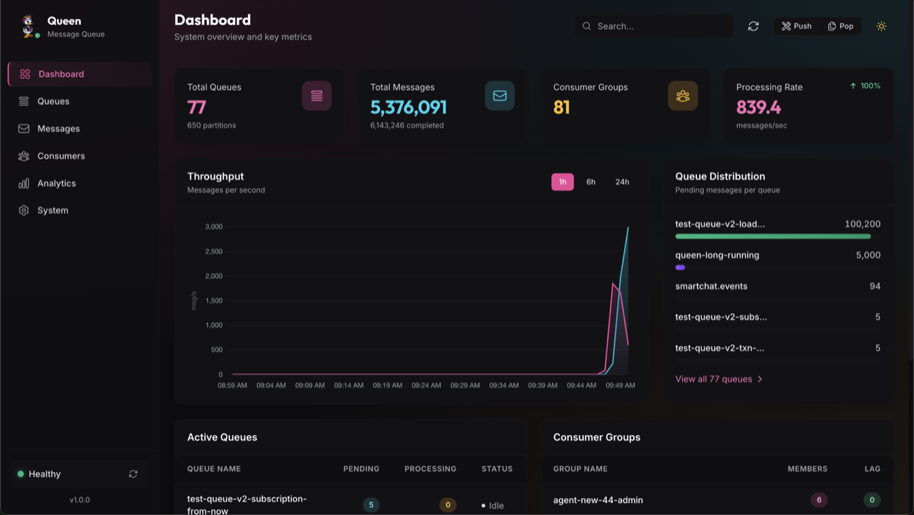
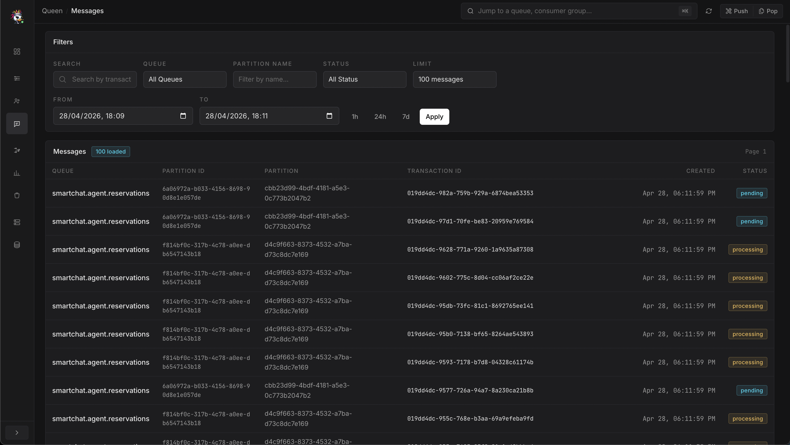
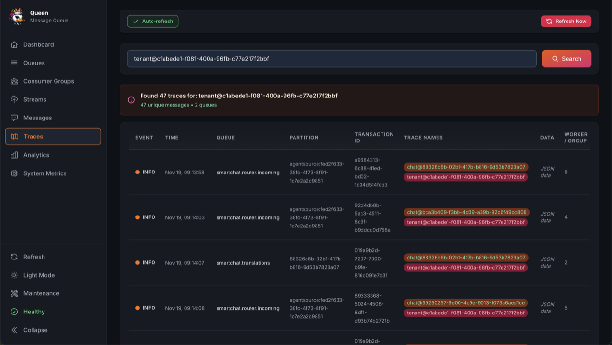

Operate Queen visually.
The Queen server ships with a built-in Vue 3 dashboard served from the same C++
binary at / on the same port as the API. No separate process to run, no
separate Docker image. Open it at http://localhost:6632
while the server is running.

What's in it
Live queue browser
Every queue with pending / completed / failed counters, throughput, retention windows, and lease state, refreshed in real time.
Message search
Filter by queue, partition, status, namespace/task. Drill into the raw payload, transaction ID, retries, and full audit trail.
Lag & ownership
Per-group offset lag, time lag, member counts, group state (Stable / Lagging / Dead).
End-to-end timelines
Follow a traceId across queues, transformations, retries, and consumer groups. Useful for debugging multi-stage pipelines.
Dead-letter management
Inspect failed messages with their error message, retry count, and original timestamps. Filter by date range and queue.
Time-series metrics
Throughput by hour / day / week, latency histograms, retention enforcement, bucketed by queue, namespace, or task.
Server health
Per-instance heartbeat, DB connection pool usage, buffer flush stats, maintenance mode toggle.
Quiesce & migrate
Toggle maintenance mode (drains pops without dropping data). Run built-in pg_dump | pg_restore migrations from the UI.
Tour


Auth model
When JWT auth is enabled, the dashboard authenticates using the same role tiers as
the API (read-only / read-write / admin).
Read-only users see metrics and message contents but can't delete queues or replay
DLQ entries; admins get the full destructive surface.
Queen itself only speaks Bearer JWT, there is no built-in
username/password login form. If you want a human-friendly login page in front
of the dashboard (and your Queen API, on the same hostname), put
queen-mq-proxy in front of it.
The proxy gives you a login UI, manages users in a queen_proxy schema
on the same PostgreSQL Queen already uses, and either issues HS256 cookies
internally or accepts external SSO tokens via JWKS passthrough — the
Queen server only ever sees a validated Authorization: Bearer
header.